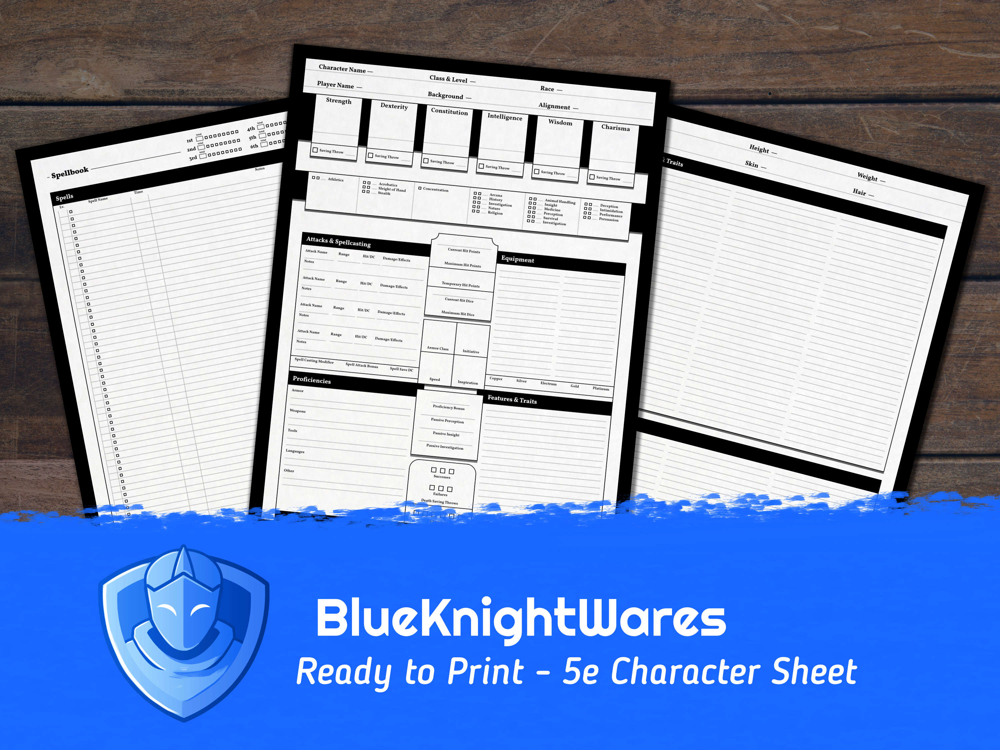
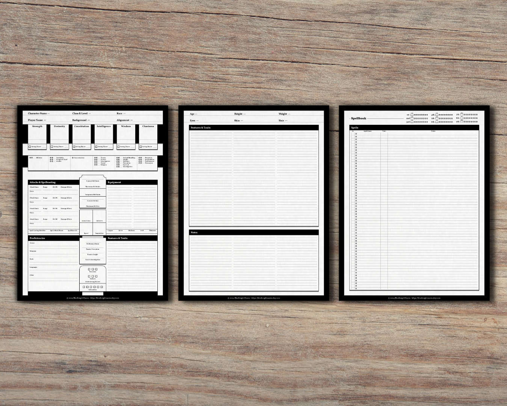
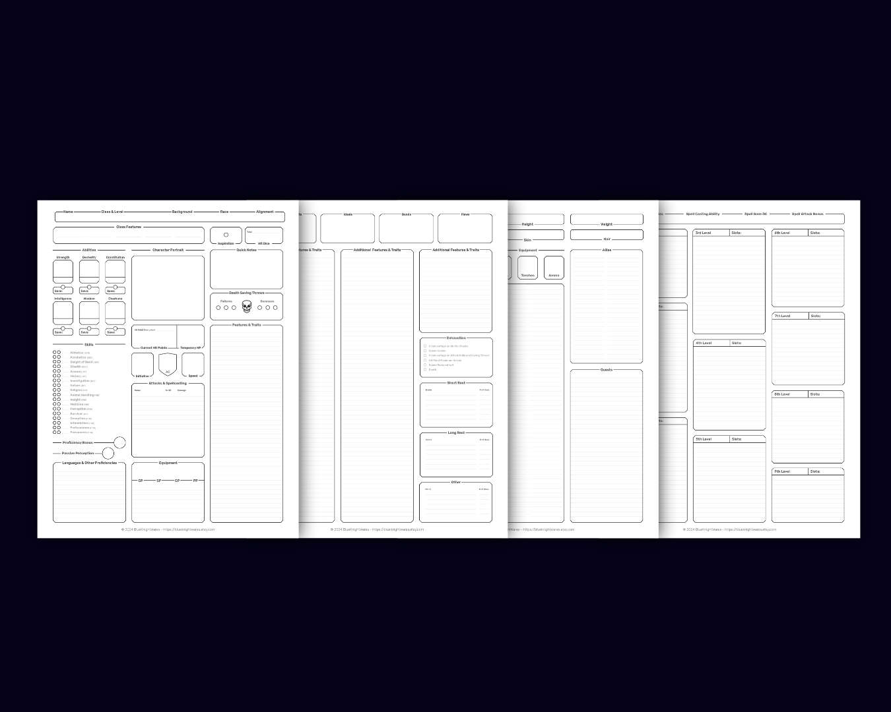

Blueknightwares is a shop I opened on Etsy to explore my passion for both Dungeons & Dragons, and design. As a player of almost 5 years, I've become very accustomed to the process of creating a new character. There have always been gripes I had with the original 5th edition sheets — which are sentiments that some of my peers shared. In the last few months, I decided to try my hand at creating a custom character sheet myself that more effectively allows a player to organize and catalog information about their character without running out of space. I have begun to consider other ways I can create these designs in ways that give a player the information they need, while being efficent and pleasant to look at. I have to consider what I should and shouldn't include, how much space should I give a section, and how many pages should something take up. My most recent designs can be viewed on my shop page included below.

